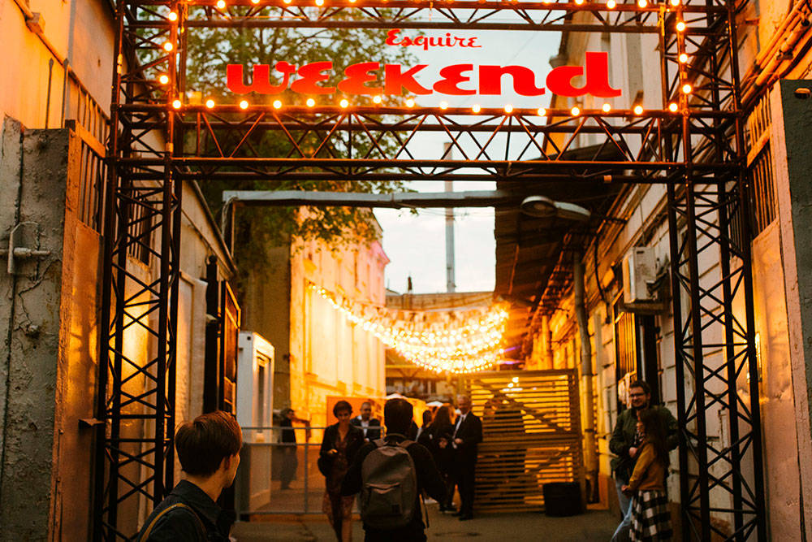
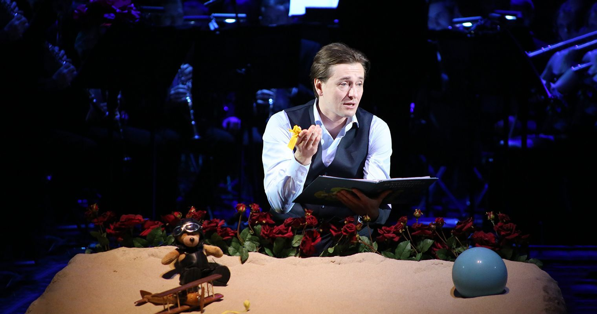

@include("templates/left-sidebar.html")
 @include("templates/right-sidebar.html")
@include("templates/right-sidebar.html")
Блог
ТОП фестивалей июня 2021 в Москве
Концертная и гастрольная жизнь в столице развернется полным ходом с первыми днями лета. Отдохнуть от долгой и изматывающей зимы мо...

255
20
Кинопремьеры июля 2021
У кого-то уже начинаются летние отпуска. И все это значит, что пора проводить все свободное время в развлечениях и культурном отды...
255
20
Куда сходить с детьми в Москве в июне
Близится начало летних каникул у школьников и студентов, выходных и отпусков. Провести первые жаркие деньки лета насыщенно, весело...
255
20
Топ фильмов за полугодие 2021
К началу лета можно уже подводить промежуточные итоги по полугодию широкого проката в России. Эти посткарантинные полгода стали дл...
255
20
Театральные постановки к 9 мая в Москве
Программа мероприятий к 9 мая заявлена в Москве и других городах России очень обширная. Ведь День Победы уже в 76 раз продолжает б...
255
20
Расписание мероприятий на 9 мая 2021
Близятся майские праздники, а вместе с ними один из самых главных и крупных праздников нашей страны — День Победы. 9 мая празднует ...

255
20
Куда сходить с детьми в мае 2021 года
Майские праздники все ближе и впереди целых десять дней выходных. Провести это время со всей семьей и детьми разнообразно, весело...
255
20
Кинопремьеры мая: на что сходить в кино на майские праздники
Провести наступающие майские праздники можно по-разному. Открыть дачный сезон шашлыками, походами в лес и на природу, парадом н...
255
20